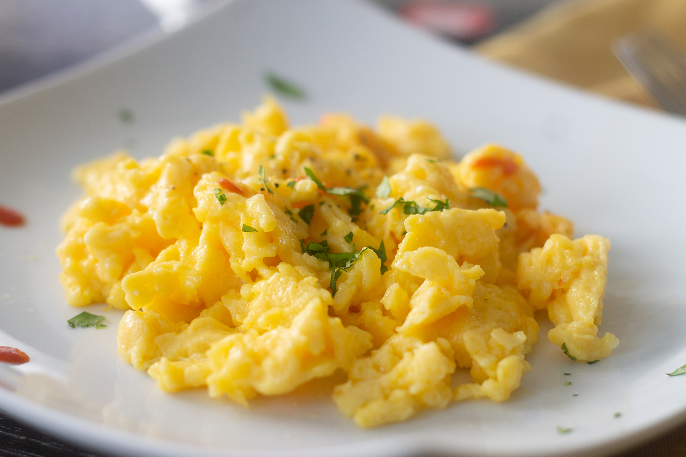

Scrambled Eggs

Farm Fresh Scrambled Eggs
Quick and Easy, follow this recipe and you'll have the best eggs in under 15 minutes.
Ingredients
- 3 Large Brown Eggs
- 2 TBS milk
- 1 tsp Butter
- a dash of salt
- a dash of black pepper
- Melt butter in a skillet on low heat.
- In a mixing bowl, whisk together eggs, milk, salt, and pepper.
- Pour mixture into skillet once the butter is melted.
- Use a spatula, to stir mixture around in the pan to keep lumps from forming
- The mixture will begin to thicken and eventually solidify.
- Remove from heat and serve alone or on some freshly toasted bread.
Odin Recipes